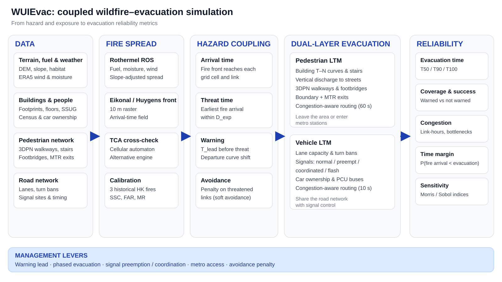

1 Research Centre for Smart Urban Resilience and Firefighting, Department of Building Environment and Energy Engineering, The Hong Kong Polytechnic University, Hong Kong
2 School of Future Cities, University of Science and Technology Beijing, Beijing, China
3 Department of Civil Engineering, Tsinghua University, Beijing, China
4 Department of Urban Management, Kyoto University, Kyoto, Japan
* Corresponding authors.
Wildland–urban interface (WUI) fires in Hong Kong differ from their low-rise counterparts: dense high-rise towers, steep terrain, and a multimodal transport network mean that evacuation couples vertical building discharge with horizontal pedestrian and vehicle flows. WUIEvac is a city-scale, risk-informed simulation framework that links a Huygens-based wildfire spread model, census-derived demand, building T–N discharge curves, an LTM pedestrian network with metro exits, and an LTM vehicle network with signal control. The framework is calibrated against satellite-derived burn perimeters from historical Hong Kong wildfires and is used to quantify evacuation reliability under uncertain fire, warning, and demand conditions. The demo shows the complete workflow, from area selection and fire spread to dual-layer evacuation and replay.
55-second overview: select a WUI area, simulate fire spread, build the pedestrian and vehicle networks, and inspect congestion and replay for both evacuation layers.

WUIEvac couples hazard, exposure, response, and management layers to produce evacuation reliability metrics.
A 20-hour fire scenario in the Tung Chung WUI district, simulated with the coupled model. The district contains 747 buildings and 78,576 residents; 45,051 residents are warned and 33,525 remain outside the warning footprint. All warned pedestrians and vehicles reach an exit, while 16 pedestrian links and 3 vehicle links exceed 30 minutes of congestion.
Three SSUG zones are warned between 2.6 h and 11.1 h after ignition. Metrics are from the coupled demonstration run; warning-wave timing, rather than the ignition clock, is used in the paper to separate fire arrival from evacuation performance.